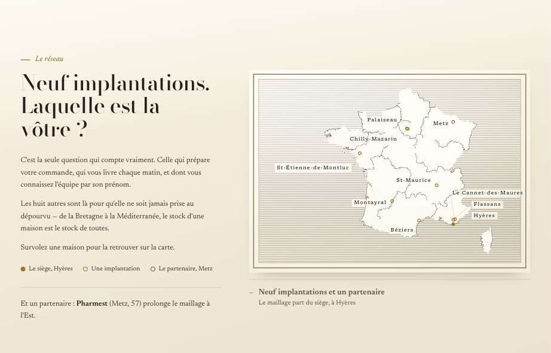
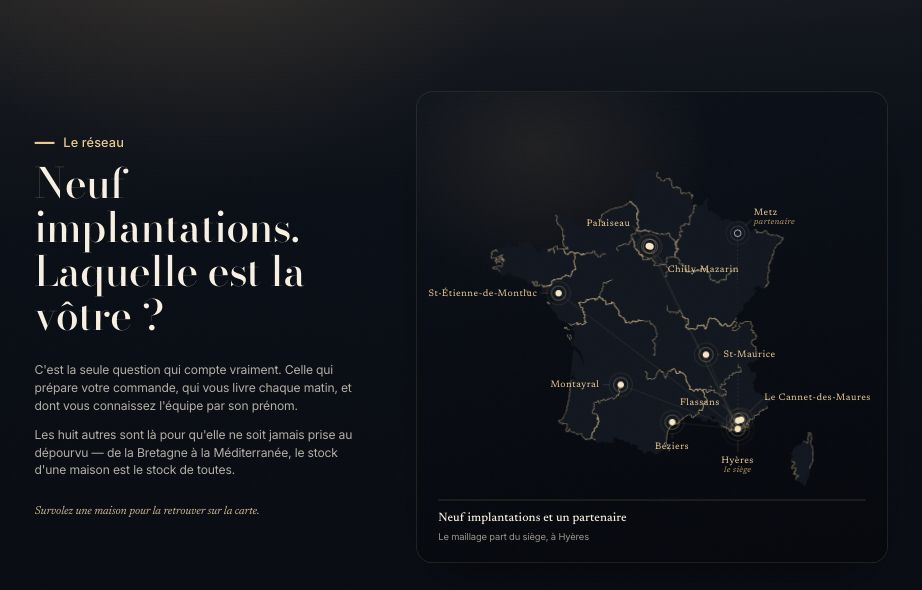
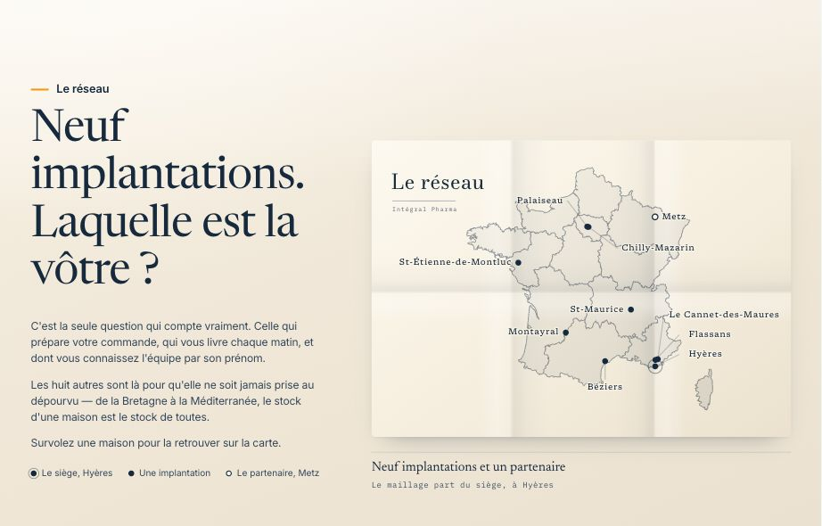
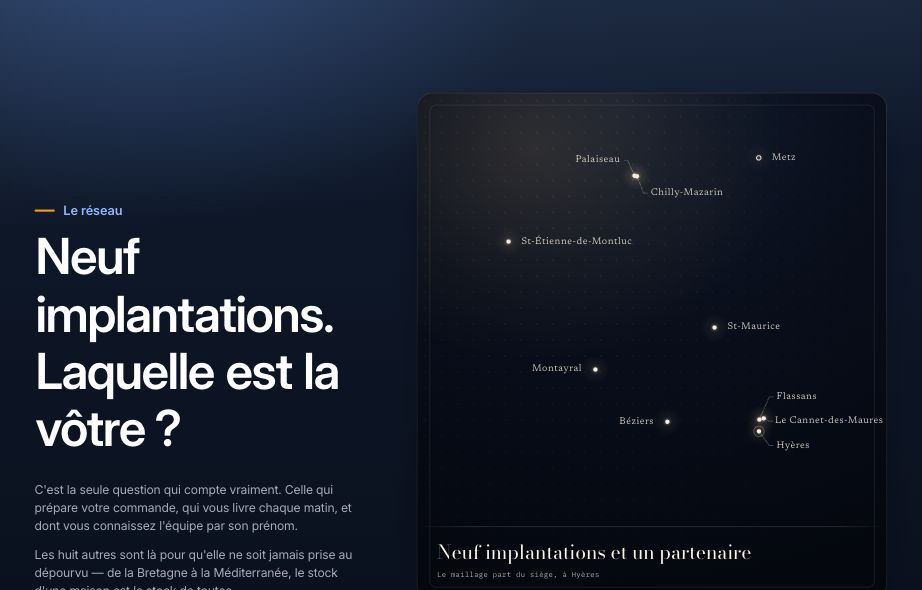
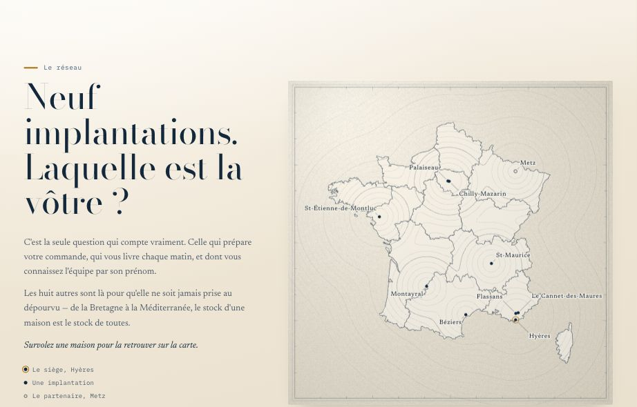

La carte du réseau — seconde série
Les cinq précédentes ont été écartées. Celles-ci cherchent autre chose : de la retenue, de la matière, une typographie sérif soignée, et le calme — au plus une apparition lente, puis plus rien ne bouge. Elles lisent toutes les mêmes données que le site : le même tracé de la France, les mêmes neuf implantations et le même partenaire à Metz.
Planche gravée sur papier ivoire : le pays au trait de burin, la mer en hachures parallèles serrées, et sous chaque nom une réserve creusée dans la mer, pour que la lettre se lise sur le papier nu. Un seul or pour les maisons. Le trait se grave lentement à l'arrivée, puis plus rien ne bouge.
Ouvrir
Un bijou. La France n'est pas un contour mais un champ de nuit à peine plus clair, cerclé d'un filet d'or d'un cheveu d'épaisseur. Chaque maison est une pierre d'or au halo court, et des fils d'or tendus les relient — si fins qu'on les devine plus qu'on ne les voit.
Ouvrir
Une feuille qu'on vient de déplier : deux plis verticaux, un horizontal, dont les ombres donnent le relief. Une seule encre, un cartouche gravé dans un angle, et les noms en petit corps espacé. Rien ne bouge après l'arrivée — pas même un calcul.
Ouvrir
Presque rien, et c'est là toute la difficulté : aucun contour de France, seulement dix lueurs à leur place exacte sur une plaque de nuit. Le pays apparaît par la seule disposition des points. Au survol, le nom du lieu s'écrit en grand, calmement, en bas de la plaque.
Ouvrir
Une carte marine. Autour de chaque maison, des sondes de profondeur concentriques s'éloignent d'un pas régulier et fusionnent là où elles se rencontrent : aucun trait ne relie jamais deux maisons, c'est leur rencontre seule qui dessine le maillage.
Ouvrir
Ces pages ne sont pas référencées. Les aperçus sont figés : chaque carte se juge en l'ouvrant. Trois d'entre elles posent la section sur un papier clair plutôt que sur la nuit — c'est assumé, et le contraste a été mesuré à chaque fois.
Une première série de cinq cartes a été écartée ; elle n'est plus proposée ici.